Before you start
You need a saved AIOStreams configuration containing:
- Catalog addons to populate libraries and shelves.
- Metadata addons for titles, artwork, seasons and episodes.
- Stream addons to supply playable versions.
Open AIOStreams
Open your chosen AIOStreams instance and select Configure. You can use a compatible public instance or your own self-hosted instance.
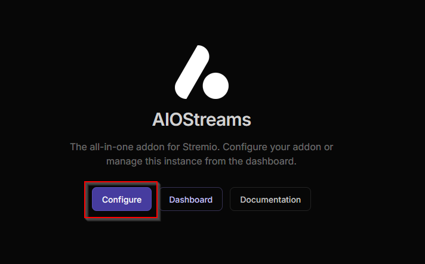
Add your addons
Open Marketplace and add the services you want AIOStreams to combine. The exact choices are personal; the important part is having catalogs, metadata and streams available.
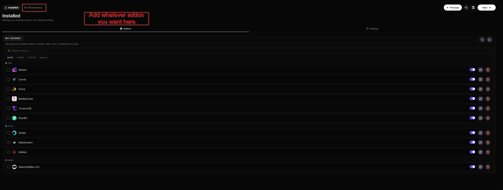
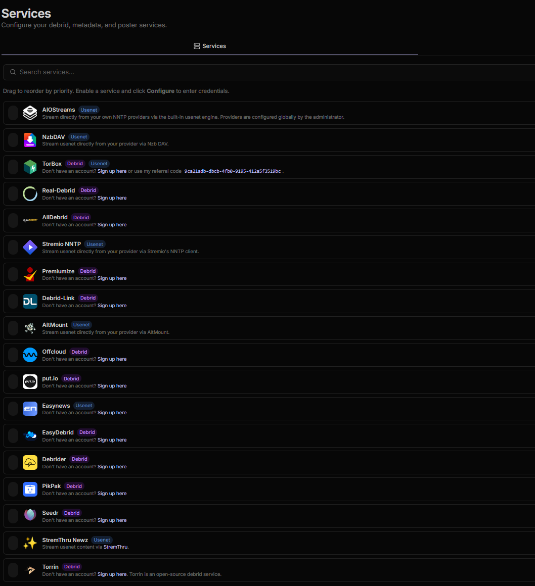
Install The Movie Database (TMDB)
For this Jellyfin setup, add The Movie Database from the AIOStreams Marketplace and keep its Catalog and Metadata resources enabled. It supplies the title metadata and identifiers needed when a Jellyfin-compatible client opens a movie or episode and asks AIOStreams for stream versions.
- Open Marketplace, find The Movie Database, and add it.
- Choose your preferred catalog language—for example, Dutch uses
nl-NL—then confirm the addon. - Open Services → Metadata → TMDB. If the instance does not already provide TMDB credentials and AIOStreams requests them, enter either a TMDB Read Access Token or a TMDB API Key from TMDB Account Settings. AIOStreams only needs one of the two.
- Save the configuration, then refresh or reopen your Jellyfin-compatible client.
Using AIOMetadata
If you use AIOMetadata, add it through Marketplace → Install Custom. Enter aiometadata as the name, paste your own AIOMetadata manifest URL into Manifest URL, and select Install.
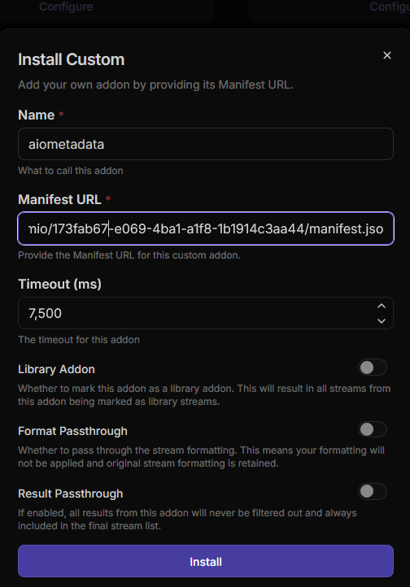
Save the configuration
Continue to Save & Install. Create a strong configuration password and save the displayed UUID and password privately. You will need them to edit the configuration and connect external player
After saving, find Jellyfin under Other Apps and open it.
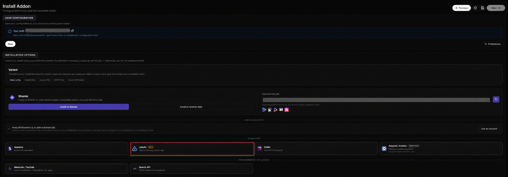
Collect the Jellyfin connection details
The Connect tab shows everything the external player needs. Keep this page open while setting up the external player
/jellyfin.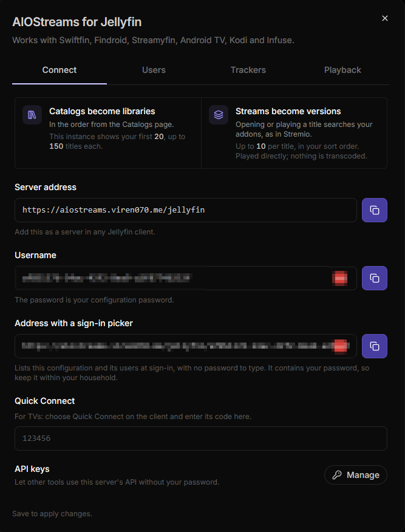
Open Media Servers in the external player
In the external player, open Settings → Media Servers, then select Add Server.
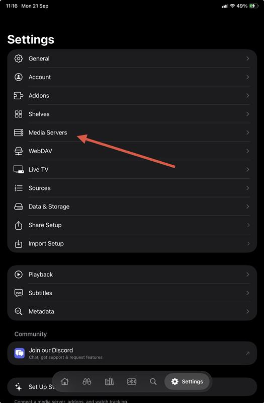
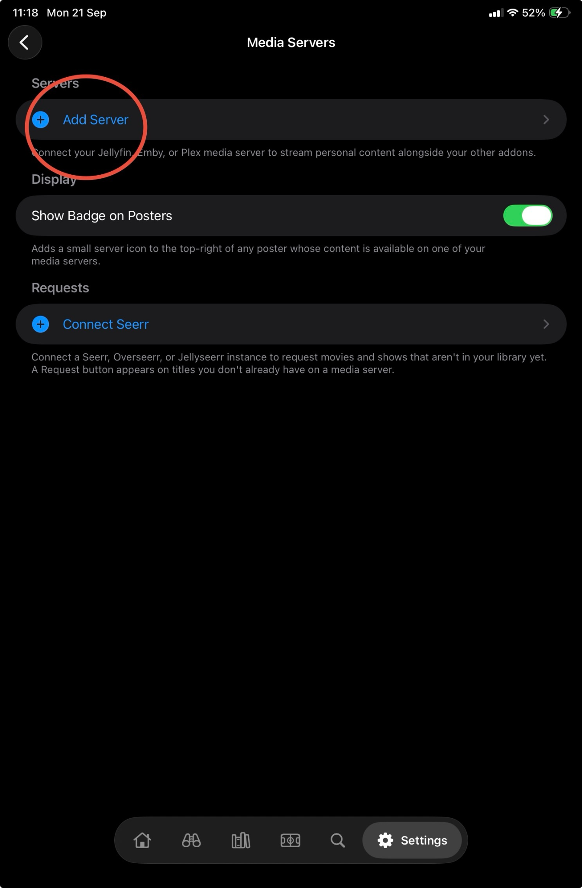
Enter the server details
Use the manual form beneath the Plex and Emby Connect options. the external player detects the Jellyfin-compatible server automatically.
| Strand field | Value |
|---|---|
| Server URL | The AIOStreams Server address ending in /jellyfin. |
| Remote URL | Leave empty unless you have separate local and external addresses. |
| Username | The UUID or alias shown on AIOStreams' Connect tab. |
| Password | Your AIOStreams configuration password. |
| Display Name | Optional—for example, AIOStreams. |
https://aiostreams.viren070.me/jellyfin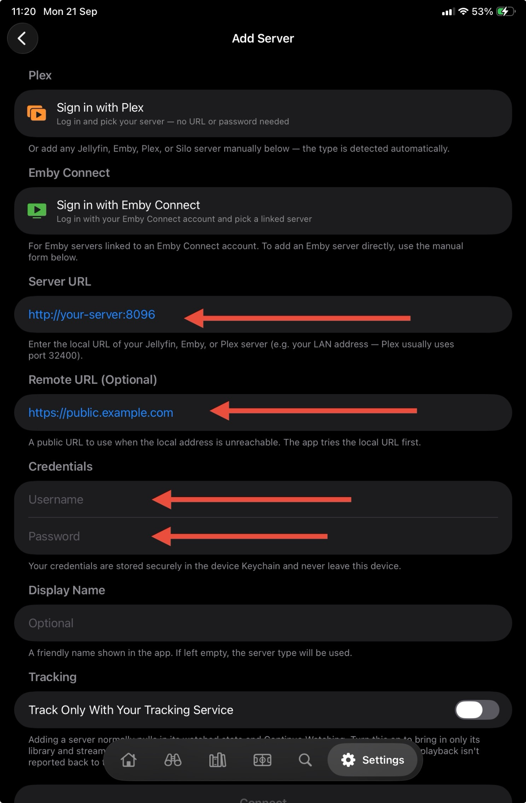
Connect and verify
Select Connect. Back on the Media Servers page, the server should show a green status dot and remain enabled.
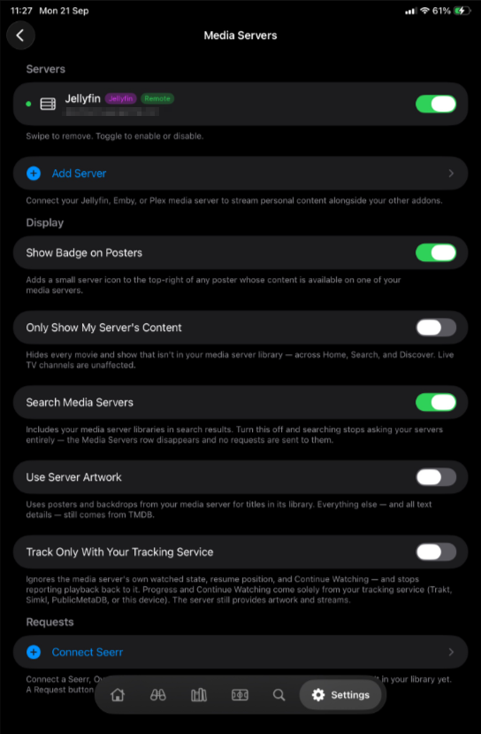
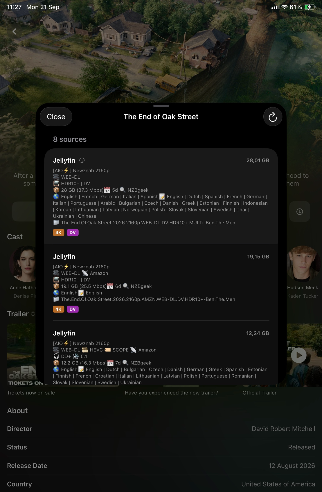
Choose your external player options
The Media Servers page includes several optional controls:
- Show Badge on Posters marks content available through the server.
- Search Media Servers includes the exposed libraries in search.
- Use Server Artwork uses artwork supplied by the server.
- Track Only With Your Tracking Service prevents the server's own watch state from affecting progress.
Start with the defaults shown in the connected-server screenshot, then change only what you need.
If something goes wrong
| Problem | Check |
|---|---|
| Server does not connect | Make sure the URL starts with https://, ends with /jellyfin, and is copied from AIOStreams' Jellyfin Connect tab. |
| Login fails | Use the displayed UUID or alias as the username and the configuration password—not a dashboard password. |
| Libraries are missing | Add catalog and metadata providers, move important catalogs upward, save, wait about 30 seconds, then refresh. |
| No versions appear | Confirm The Movie Database or another compatible metadata addon is enabled, check Services → Metadata → TMDB if AIOStreams reports a missing or invalid credential, verify your stream addons work, and make sure filters are not excluding every result. |
| A version does not play | Try another version. Playback is direct and depends on the formats supported by your external player and the device. |
| Jellyfin option is disabled | The AIOStreams instance owner may have disabled Jellyfin support. Use a compatible instance or enable it on your self-hosted deployment. |
Official references
- AIOStreams Jellyfin guide
- AIOStreams setup guide
- AIOStreams source repository
- TMDB API documentation
This is an independent community guide. It is not made, reviewed or endorsed by Strand, AIOStreams or Jellyfin. Interfaces can change between releases.